Documentation for FontoXML/MGG
General instructions
FontoXML is not a word processor. While some aspects of FontoXML will be intuitive if you are used to Microsoft Word or Google Docs, do not expect all text in FontoXML to appear the way it will when published. To see a preview of the published text, please use the View button in the Editorial System.
Tagging
When you click in a particular paragraph or item, highlighting will appear to show which text has been tagged. That tagging will appear in shades of blue, gray, red, and yellow, depending on what tag is applied.
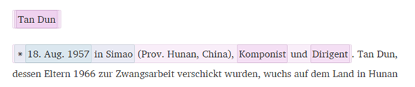
The tagging highlighted in yellow without a box around it is a formatting tag. Replacing these tags with semantic tags will greatly benefit users of MGG Online. Please change these tags if possible.
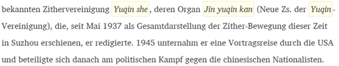
Any text underlined in pink means there is an editorial comment left by an editor and will not be published.
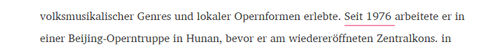
The comment will show when you click on the text.

The tabs and menus were designed to put commands in a logical order. However, commands from one menu might be useful in many circumstances. Some commands are duplicated in various menus.
Location bar
On the bottom of the screen there is a display that shows your location in the document. When the cursor is placed on highlighted text, this display will show you which tag the highlighting represents. In the example below, the cursor is in a Birth tag.
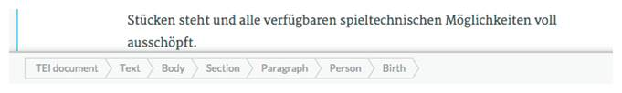It is important to monitor the location bar while using FontoXML, for while text will not appear as you expect it to, if the label in the location is correct, the published text will be correct.
Tabs on the right
There are three tabs that can be viewed by clicking on the buttons PROPERTIES , STRUCTURE, AND SOURCE all the way to the right side of the screen. Two of them—PROPERTIES and STRUCTURE—will be useful to authors in certain situations.
- The STRUCTURE tab shows the main sections of the article. The name of the section in which the cursor is currently placed in in boldface. This tab is useful for moving quickly from one section of an article to another.
- The PROPERTIES tab. Some tags have variable properties. For instance, users can specify the language for many tags. For a phrase tagged foreign, click on the plus sign () icon next to the language property, choose the appropriate language, and then click Save properties. To change the language of a whole document from German to any other language, put the cursor at the very top of the article (it will become horizontal), then click on Text in the PROPERTIES tab. Then change the language, and click Save properties.
Paragraphs and sections
Creating a new paragraph
To create a new paragraph, click Enter or Return at the end of an existing paragraph, or section heading, or click Enter/Return in an empty list item.
Creating a section
To create a new section, place the cursor anywhere in an existing section, and select the appropriate type of section from the Structure menu on the Insert tab. The new section will appear at the end of the section where your cursor is.
Creating a subsection
To create a subsection, first create a new section after the section in which the subsection is to appear. Then open the STRUCTURE tab. There you will see an ellipsis (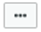) icon. Click on the ellipsis. To change the new section to a subsection of the section above it, click Move right (If there is existing text in the section that you want to move to a new subsection, create the new section above the existing section and convert the existing section in to a subsection of the new section with Move right. You can change the type of each section in PROPERTIES.)
Changing a section number
To add a number to a section, or to change the number of a section, first select the Section button on the location bar at the bottom of the page. Then open the PROPERTIES on the right side of the page, and change the Number property.
Updating topic article Tables of Contents
When changes are made to the sectional organization of topic (Sachteil) articles, the section headings listed at the beginnings of those articles will also need to be updated. These TOCs are formatted as lists; see §B2.2 below for more on editing lists.
To create a link between a section heading in the TOC and that section’s location in the article itself, open the Insert tab and select Link, Local Link. When the dialogue box appears, begin typing the section heading in the Filter by Text box. Once the appropriate section heading appears under Items in this document, select it and click Insert.
The eraser icon
The eraser icon , found at the top left of FontoXML, allows you to erase tags. Place the cursor anywhere in the document and the tag you are on (as shown in the PROPERTIES tab) will be erased. No text will be erased—only tagging. If multiple tags appear on top of one another, you must erase all of the tags at the lowest level first before erasing the tags that contain them.
Templates
Any Command that includes the word “template” will insert a series of gray boxes into the text that look like this:

You will find these templates in two places. One, MGG/ Bibliogaphy/Bibliographic Citation, has templates for the most common types of bibliographic citaiton: Monograph title template, Periodical article Template, Collection article template.
Type directly into the gray boxes to complete the template. Any box can be left empty and nothing will appear in the text. However, any text or punctuation outside of the boxes must be deleted if you do not want it to show in the text. If you have additional information in bibliographic citations that are not covered by the existing templates, you can simply type that information in and then tag it with the appropriate tag.
FontoXML Tabs
MGG tab: Tagging words, phrases, or passages in the text
This is the tab you will be using most often. It contains the most-commonly used tags for tagging MGG text. It contains six menus: Names, Quotation, Music, Bibliography, Works, and Titles.
Names
Person
Person is used to tag and format names of, and information about persons. It is used to tag the beginning of Personenteil articles about persons, and of sections within Personenteil articles about families, and can be used at any point in the text to tag a name that appears with biographical information such as birth and death dates.
Person should always contain other, more specific tags: at the very least, it will contain Personal name. It might also contain Birth, Death, and Occupation. Personal name itself can contain any parts of a name: Forename, Surname, Surname prefix, Generational name component, Role name, and Additional name. Use Variant personal name for any variant spellings, Romanizations, or other forms. If information about birth, death, or occupation appears, tag the entire excerpt as a Person. Then tag the name with Personal name and other information as follows:
Text without any tagging:
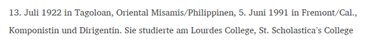 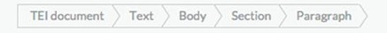First, tag the entire first sentence with Person:
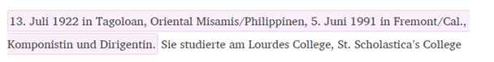 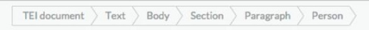As soon as an excerpt is tagged as Person, a Taxonomy entry window will appear, where you can connect that person with his or her entry in the RILM database. Start typing the surname in the Search Taxonomy box, and select the correct person if found. Then click Apply, even if no match has been found.
Then, Birth for “13. Juli 1922 in Tagoloan, Oriental Misamis/Philippinen” and Death for “5. Juni 1991 in Fremont/Cal.”:
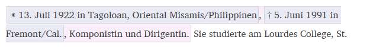 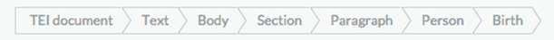Then Date for “13. Juli 1922” and “5. Juni 1991”:
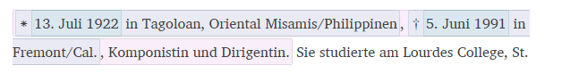 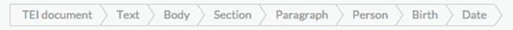Then Place name for the place of birth and the place of death:
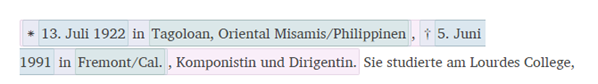 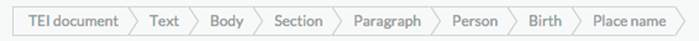Then Occupation (two times) for “Komponistin” and “Dirigentin”:
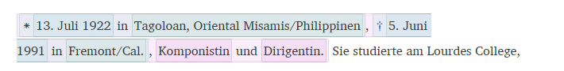 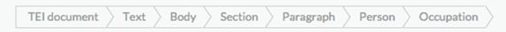Link any instance of Person to RILM by searching in the dialog box. Search for names in the format Surname, Forname.
Birth and Death information
Within a Person tag, tag all information about a person’s birth with Birth, all information about their death in Death, all information about their baptism in Baptism, and all information about burial in Burial. Within these tags, use Date and Place name. There is no need to insert a * or a † in Birth or De ath. They will be generated automatically. Existing asterisks and daggers must be deleted.
Names of Organizations
The name of an organization—especially one that is the subject of an article—can be tagged with Organization name or Variant organization name. Performing organizations, such as orchestra or rock groups can be tagged Performing group, and will be rendered in italics.
Place Names
Place names, when they appear in Person or in Performance, can be tagged Place name.
Quotation
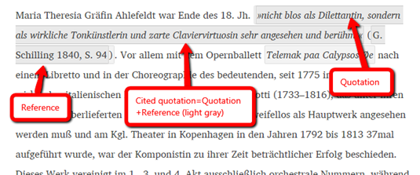In this system, users do not use quotation marks; instead, there are a few tags that will produce them when text is presented. For quotations from other sources, use Quotation. Note also that all passages tagged with Quotation will be surrounded with double quotation marks in FontoXML, even when the quotation is nested within another quotation. Nested quotations will render correctly in View in the Editorial System, and in the final published article.
If the quotation is followed by a reference, first tag both the quotation and reference with Cited quotation, and then tag the quotation with Quotation and the reference with Reference. If the reference refers to an item listed elsewhere in the article, use INSERT/Link/Local link instead of Reference.
For so-called, used So-called. For incipit titles, use Incipit title from the Titles menu. For titles within titles, simply use one title within the other; the “child” title will automatically be rendered in quotes.
Schubert’s »Der Tod und das Mädchen«: Analytical and Explanatory Notes on the Song D 531 and the Quartet D 810
The Quotation marks command, which can be found in the Formatting menu, creates quotation marks in the text without signifying the purpose of the quotation marks. Use them if no other command seems appropriate.
Line group and Verse line can be used together to format verse, as in the following example. Each line is tagged with Verse line and the entire strophe (Line group):
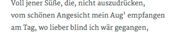
List menus: Bibliography and Works
The Bibliography and Works menus are designed for creating and tagging works lists, bibliographies, and other similar lists. To create a citation in one of these lists, add a Bibliographic citation or Works citation, and add information within that citation. There are also three templates for bibliographic citations available which are visible when you put your cursor over Bibliographic citation in the Bibliography menu.
Use Author, along with any name parts (forename, surname, etc.) for authors. Use Author for specialized roles such as librettist or producer as well. Use Editor for editors. If an editor bears responsibility for an item and therefore appears before the title, select Editor – primary. If an author appears after the main title in the entry, select Author – secondary. Use other commands, such as Translator or Compiler when appropriate; use Editor for any other person whose contribution to the work is secondary.
Tag the title with the proper title type (in the Titles menu). Also, many title types have a “secondary” variant. If the title is secondary within the reference, e.g., it is the title of a collection in which the primary work is published, choose the “secondary” variant of the title type. That will cause the title to be rendered in Roman type.
- Publication place will contain the place of publication.
- Date will contain the date of publication. For dates of composition, render the date in parentheses and select Composition date from the Works menu.
- A numbered edition can be tagged as Edition (superscript).
- Tag page ranges, volume numbers, etc. with the appropriate designation in the Bibliographic scope section of the Bibliography menu.
- A DOI should be tagged with DOI
- Tag web addresses (URLs) with Web address
- Tag opus numbers and other catalog numbers with Catalog number. Make sure to tag both the abbreviation (“op.”, “K.”) and the number.
- The instrumentation can be tagged with Instrumentation. All instrumentation for a particular work would go in one Instrumentation tag.
- A dedication or dedicatee can be tagged with Dedication.
- A key in a works list can be tagged with Musical key.
- For information about a particular performance of a work, use Performance, Ur-performance, or First performance
- References to RISM can be tagged with one of two tags: RISM Series B/I and RISM library siglum. For Series B/I, substitute a slash before the number of the record. It will be converted into a superscript for publication. For example, if “RISM 1610/16” is entered in the editor, it will appear as “RISM 161016” in the published text.
 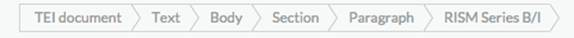
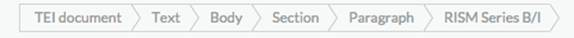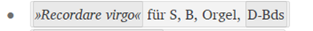 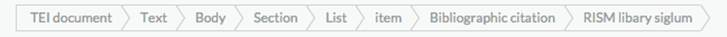
- For Dissertations from the US, a UMI number can be tagged UMI number.
- A publication date can be distinguished from a composition date using Publication date and Composition date.
Titles
Titles, whether they appear in a prose section or in a works list or bibliography, should be tagged with a tag from the Titles menu. Select the appropriate option, and the text will be formatted correctly. Title will generate italicized type.
Titles within titles should also be tagged this way. Formatting will be set automatically.
Formatting
The Formatting menu contains various tags for text that is either italicized or set in quotation marks.
- Mentioned, So-called, and Foreign text should all be preferred to Italic or Quotation marks.
- Musical note name will tag and italicize a pitch class.
- Pitch name formats a note name with an octave, such as E2 or cis1. There is no need to format numbers as subscripts or superscripts within Pitch name, as they will be formatted automatically in publication.
- When adding Foreign text, you will be prompted to enter the language of the text and a value for render. Only enter a value for render if the text should not be italicized.
- Note captures text that is parenthetical and therefore formatted differently from the surrounding text. Unless indicated otherwise through the PROPERTIES tab, the contents of Note will always be rendered in Roman type. It will be used often in the following case: After a works or bibliography heading, there is often a parenthetical note describing the sources of the list to come. This note should be tagged Note within the Heading: 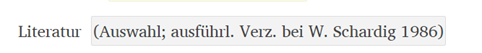 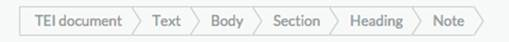 Note will also often be used for bracketed asides within quotations and titles, as in the following example: 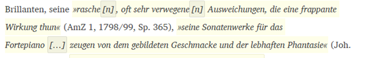 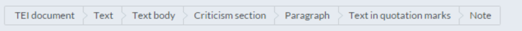
Insert tab
On the INSERT tab you can insert sections, special characters, musical examples, figures, and tables into the text. Along with two menus, Structure and Link, that allow the addition of new sections and references, there are eight commands along the top menu bar: List, Figure, Music example, Image, Musical symbol, Special character, Gap, Editorial note, and XML.
Structure
The Structure menu contains the most frequently used sections for both Sachteil and Personenteil articles. There is no difference in the system between a section and a subsection. To create a subsection, simply move one section within another (see §A4.3 above).
To insert a new paragraph, position the cursor directly before the place where the new paragraph is to begin and press Enter.
For general instructions on sections, see §A4 above.
Each article begins with a Heading section. This section contains a paragraph with the title of the article. If the article is about a person or a family, that title should be further tagged with Person. Within Person, each name should be tagged first with Personal name and then a more specific designation, such as Surname or Forename. (This is because, while the heading usually only references on person, that person is sometimes known by multiple names.) If there is a table of contents (or a listing of family members), a Contents section also appears within the Heading section. For lists of family members, the Contents section will contain a Section heading (for “Familie:”) and a Paragraph for the list of names. Those names need not be further tagged in this section.
To add or change the number of a section, use the number field of the PROPERTIES tab. Make sure you are on Section in the breadcrumb menu when you do this, rather than heading.
To add an article author, first insert an Authors section and then a Document author. An Authors section can be inserted at the close of any section or at the end of the article.
Article Authors
MGG Article authors will be tagged in Personal name within Document author. Please capitalize names of authors following proper orthographic conventions.
List
To create a list, start a new paragraph, then click the List button. Press Enter to create a new list item.
To change the hierarchical level of a list item, press Tab or Shift+Tab. Tab moves the list item to the right and Shift+Tab moves the list item to the left.
Table of contents
To insert a table of contents in a topic article (Sachteil),
- Add a Contents section within the Heading section.
- Then add a Section heading with the text “Inhalt:”
- Create a list with List.
- Change the bullet to a number or letter in the number field of the PROPERTIES tab.
- The number must be changed for each subsequent item in the table of contents.
Figure
To insert a Figure, including an image, click the Figure button. Then browse for the image and click upload. Once the filename appears in the box, select it and click select file. You will then be able to add a heading, such as “Figure 3” and a caption.
Music Example
A Music example is equivalent to a Figure, except that it contains an excerpt of notated music. To insert a musical example, click Music example and follow the directions above for Figure.
Image
Image inserts a inline image. It should be used for images of symbols that cannot be added with Special character or Musical symbol.
Link
Hyperlink
Hyperlink allows you to create a link to a Web URL. Enter the full URL in the text. Then select the URL and click Link/Hyperlink . A dialog box will appear, where you must enter the URL again.
Local link
Local links are links to other places in the document you are working in. They are used to link in-text references to items in works lists or bibliographies.
Local link will trigger a screen to appear, where you can select a location to link to. For instance, for a quote followed by a reference such as (T. Guiard 1906). Select this whole reference, click Local link, and search for “T. Guiard, Conferencia dada por Don Teófilo Guiard en la Salón de la Sociedad…” from the Literatur section. Select that passage and click Insert.
Note that if an article has been split, and you are linking to a location in a different split part, you must use Cross link.
Cross link
All cross links (cross references between articles) will be added by the MGG editorial staff.
Musical symbol
Musical symbol allows you to insert any of almost 2400 musical symbols. They are organized by “range”, and the ranges can be sorted numerically (so that more commonly used ranges generally appear at the top) or alphabetically. These symbols come from the Standard Music Font Layout (SMuFL). You can also search for a character in the box labeled “Filter labels and characters.”
Special character
Special character allows you to insert non-musical special characters. The tool is similar to Insert symbol in Microsoft Word or the Character Map in Windows. They are organized by Unicode range, which can be sorted numerically (so that more commonly used ranges generally appear at the top) or alphabetically. You can also search for a character in the box labeled “Filter labels and characters.” Special characters can also be inserted by copying them from another application, such as Microsoft Word, and pasting them directly into FontoXML.
Editorial note
Editorial note allows authors, editors, and other users to make comments in the text. (This serves the same purpose as Comment, but appears inline in the text.) They are highlighted yellow in FontoXML and will never be published if accidentally left in the text. Simply tag any text as Editorial note or insert an Editorial note, place the cursor in it, and start typing.
Insert XML (Pasting text from Word)
This feature is still in development, but we have created a temporary work-around. The feature will soon be easier to use, but this will work for now.
In order to paste from word, prepare the .doc or .docx document in the following manner:
- Take out all headings, tables and images so that the Word document consists of only paragraphs and/or non-numbered (bulleted) lists.
- Save the document.
- Go to http://mgg-edit.rilm.org/word-conv/ in a Web browser.
- Select Choose file, then find the Word file you wish to convert (.doc or .docx).
- Open the file with Notepad (on a PC), TextEdit (on a Mac), or any other text editor. (Do not add line breaks or spaces to the document.)
- For paragraphs, Copy any amount of text that starts with “<p>” and ends with “</p>”, or
- For lists, copy any amount of text that starts with “<item>” and ends with “</item>”.
- Select XML in the FontoXML INSERT tab.
- Paste you text (using Ctrl + V) and click Apply.
Table tab
Table
A “table” in this system has neither a caption nor a number. If you need a caption or number use Table figure (See 3.2 below).To insert a table, use the Table button on the TABLE tab, and choose the number of rows and columns. You can always add or subtract columns from a table later with the Row and Column menus.
Table figure
A table figure in this system is a table with a caption and/or a heading. The “Heading” field is for a label such as “Tabelle 3”. The “Caption” is for a description of the table.
View tab
Section hierarchy
Turning on Section hierarchy shows the hierarchy of sections using visual bars and indenting on the left-hand side. This is especially useful for long articles with complex structures.
Whitespace
Turning on Whitespace will show a dot (∙) in the location of every space.
Source
Turning on Source displays the underlying XML code of the article.
Review tab
Spell check
Turning on Spell check will underline all words not found in FontoXML’s spelling dictionary with a red squiggly line. Right click on any underlined word to see spelling suggestion
Show changes
Turning on Show changes will show all text added (underlined in green) and deleted (underlined in red) since the last published version of the article. Placing your cursor anywhere in this underlined text will show when the change was made and who made it. Changes can be accepted or rejected only by editors.
Show comments
Turning on Show comments will show comments left since the last published version of the article. The presence of a comment is signified by text underlined in pink. Place your cursor anywhere on that text to view the comment.
Add comment
Add comment allows authors, editors, and other users to make comments in the text. To leave a comment, highlight some text and click Add comment. A box will appear into which you can type your comment. Leaving a comment will also automatically make all comments visible, underlining them in pink. To view the contents of a comment, as well as who wrote the comment and when it was written, place the cursor on any of the underlined text. To turn off the pink underlining, click Show comments on the View tab.